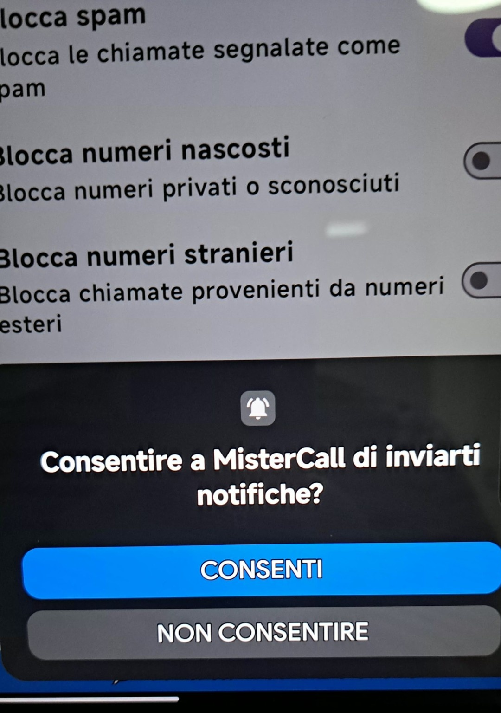
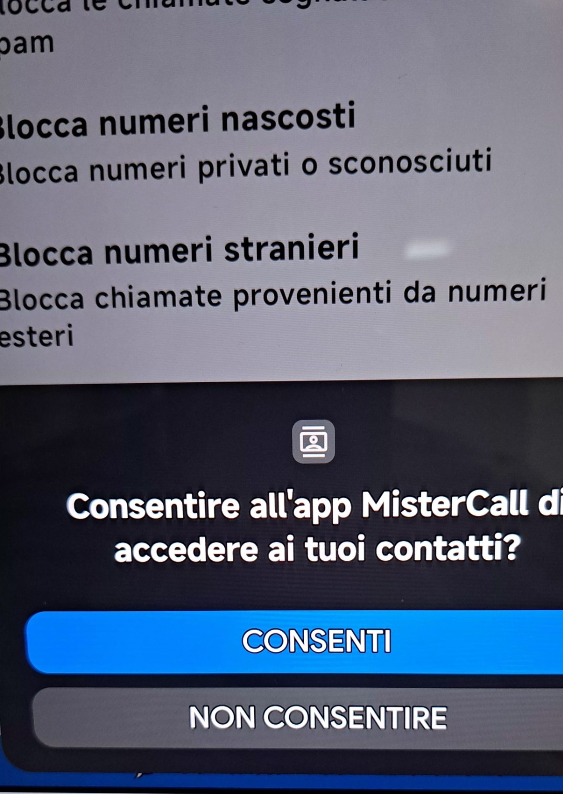
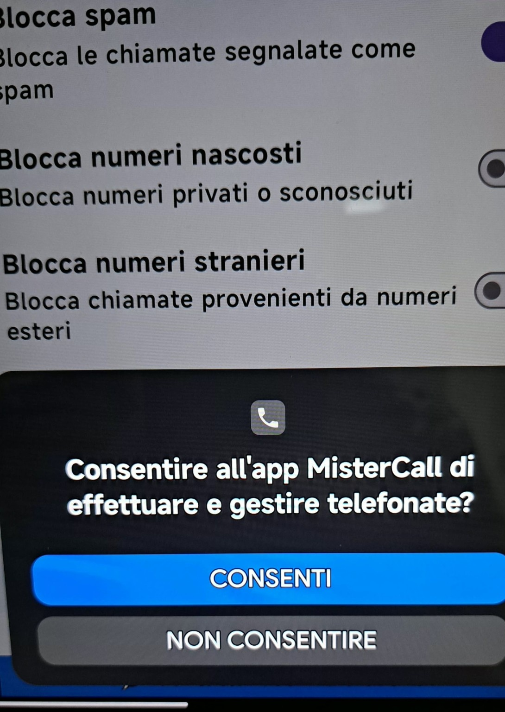
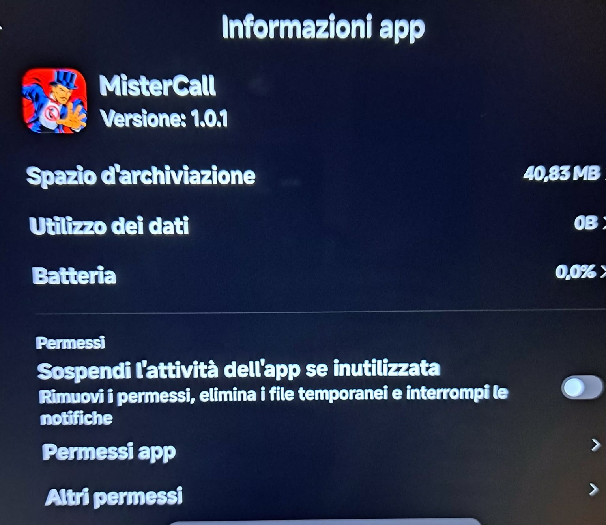
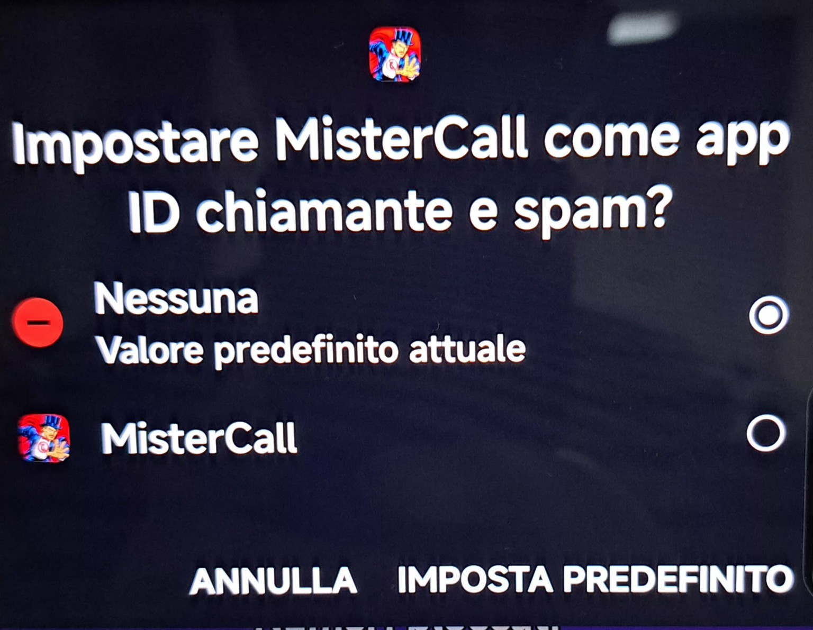

OFF
Protezione disattivata. MisterCall non applica il blocco tramite il livello di protezione.
Una guida semplice e ordinata per completare la prima configurazione e conoscere le funzioni principali dell’app Android.
MisterCall è un’app pensata per aiutarti a proteggerti dalle chiamate indesiderate, come quelle provenienti da call center e numeri riconosciuti come spam.
Questa guida accompagna passo dopo passo nella configurazione iniziale e nell’utilizzo delle funzioni disponibili.
Completa i passaggi nell’ordine mostrato dalla procedura guidata.
La richiesta viene mostrata da Android durante la configurazione.
Quando Android mostra la richiesta, tocca CONSENTI. Le notifiche permettono a MisterCall di mostrarti le comunicazioni previste dall’app.

Concedi il permesso quando compare la richiesta.
Quando compare la richiesta relativa ai contatti, tocca CONSENTI. Questo permesso permette di riconoscere i numeri in rubrica: i contatti riconosciuti vengono consentiti prima di applicare i filtri, anche se esteri o presenti nei Bloccati. Senza il permesso, MisterCall non può riconoscerli. La rubrica non viene inviata al sistema pubblicitario.

Autorizzazione necessaria per le funzioni di gestione delle chiamate.
Quando Android mostra la richiesta relativa al telefono o alle chiamate, tocca CONSENTI. Questa autorizzazione è necessaria per le funzioni di gestione delle chiamate previste dall’app.

Questo passaggio viene aperto automaticamente da MisterCall.
Dopo aver concesso le autorizzazioni precedenti, MisterCall apre automaticamente questa schermata Android. Non devi cercarla manualmente nelle Impostazioni.

Ultimo passaggio della configurazione iniziale.
Dopo le autorizzazioni, Android chiede quale app usare per ID chiamante e spam. Seleziona MisterCall e premi IMPOSTA PREDEFINITO, se richiesto.

Il livello selezionato determina il comportamento della protezione.
Protezione disattivata. MisterCall non applica il blocco tramite il livello di protezione.
Protezione gratuita con filtri locali, controllo antispam CallFilter, liste personali e notifiche configurabili. Include banner pubblicitari.
Livello Premium previsto per il futuro. Al momento l’abbonamento non è disponibile.
Attiva queste opzioni solo se corrispondono alle tue esigenze.
Blocca call center e spam abilita il controllo antispam esterno. Disattivandolo, gli altri filtri locali restano validi. Blocca numeri non in rubrica riguarda le chiamate di numeri non riconosciuti fra i contatti.
Le opzioni contrassegnate dalla corona, come Gestione chiamate, Filtri numerici e Backup, sono riservate a MAX e non sono utilizzabili nella BASE pubblicata. BASE rifiuta le chiamate bloccate.
Consulta le chiamate bloccate e registrate nell’app.
Apri Numeri bloccati dalla Home per vedere un unico elenco dei numeri inseriti manualmente e di quelli registrati dai blocchi automatici. Le voci con data sono ordinate dalla più recente. Le voci storiche prive di data possono non mostrarla.
Puoi aggiungere un numero manualmente o sceglierlo dal registro chiamate. Con SBLOCCA lo rimuovi dai Bloccati e lo aggiungi ai Sicuri.
Gestisci le scelte personali sui numeri.
Apri Numeri sicuri dalla Home. Non è previsto l’inserimento manuale in questa schermata: un numero entra nei Sicuri quando lo sblocchi dai Bloccati o quando rispondi NO alla domanda sulla chiamata indesiderata.
Con BLOCCA lo rimuovi dai Sicuri e lo aggiungi ai Bloccati. I contatti in rubrica vengono riconosciuti separatamente e non vengono aggiunti automaticamente a questa lista.
Le impostazioni delle notifiche sono disponibili in BASE.
In Avanzate puoi attivare o disattivare separatamente le notifiche per le chiamate bloccate e quelle per un nuovo numero. Disattivare una notifica non disattiva la protezione.
Dopo una chiamata consentita da un numero sconosciuto, la notifica può aprire la schermata “CHIAMATA INDESIDERATA?”: scegli SÌ per bloccare il numero oppure NO per considerarlo sicuro. Non viene proposta per ogni chiamata: contatti, numeri già nelle liste e numeri già valutati sono esclusi. La funzione richiede Android 12 o successivo e i permessi necessari.
Se ignori la notifica senza scegliere SÌ o NO, il numero non viene considerato valutato e la domanda può ricomparire dopo una successiva chiamata.
Il consenso pubblicitario è separato dai permessi Android.
BASE prevede banner nella Home, in Avanzate e nella schermata di valutazione aperta dalla notifica dopo una chiamata. I banner hanno uno spazio dedicato, separato dai pulsanti.
Quando richiesto, il modulo Google permette di scegliere le preferenze sul trattamento dei dati pubblicitari. La protezione telefonica non dipende dall’accettazione del consenso pubblicitario. In base alle scelte e alla disponibilità, possono comparire annunci limitati oppure nessun annuncio.
Per rivedere le scelte, apri Avanzate → Privacy pubblicità, quando la voce è disponibile. In assenza di rete i banner possono non caricarsi; il controllo antispam esterno richiede invece una connessione.
Consulta l’informativa privacy per i dettagli sui dati trattati, sui servizi esterni e sulle richieste inviate dal modulo Contatti.
La funzione Premium non è ancora disponibile.
MAX è previsto come funzione Premium. Nella versione attuale l’abbonamento non è ancora disponibile.
Controlli semplici prima di chiedere assistenza.
Apri le Impostazioni Android, seleziona App > MisterCall e controlla le autorizzazioni disponibili.
Usa il modulo Contatti nell’app oppure scrivi a mistercallsupport@gmail.com. Indica il modello del telefono e il problema riscontrato. Il modulo richiede email e messaggio, consente un nome facoltativo e aggiunge automaticamente la versione Android.
Puoi tornare all’app e utilizzare le funzioni disponibili nel livello di protezione scelto.